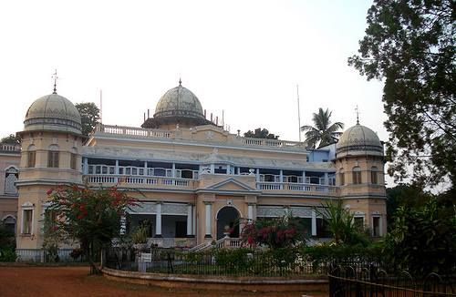
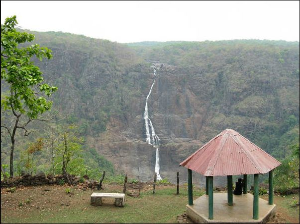

About Jhargram
Jhargram, located in the southwestern part of West Bengal, is known for its tribal heritage and cultural richness. The district is home to various indigenous tribes, each with their own distinct traditions, languages, and art forms. The Jhargram Raj Palace adds to the cultural significance by highlighting the historical roots of the region. The annual "Jhargram Raj Mela" is a major event that showcases tribal dances, music, handicrafts, and traditional cuisine, drawing attention to the cultural diversity and indigenous heritage of the area.

